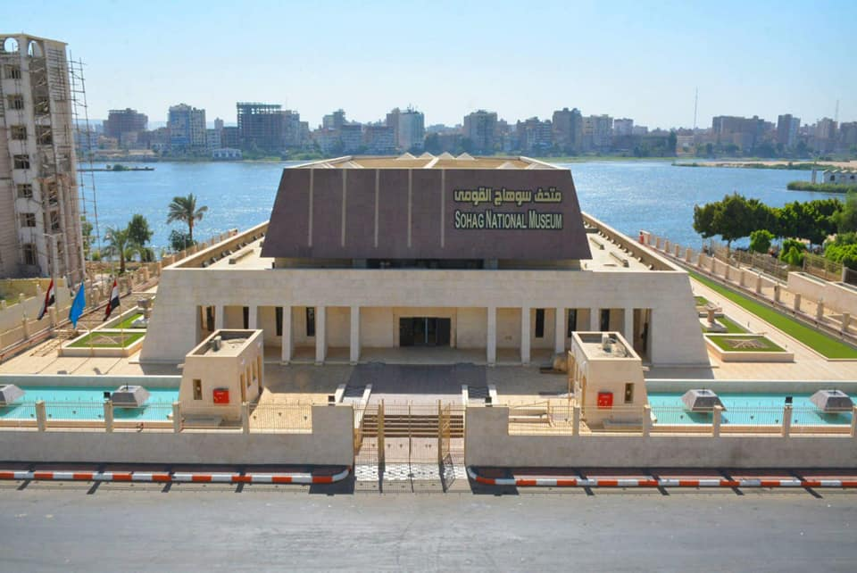
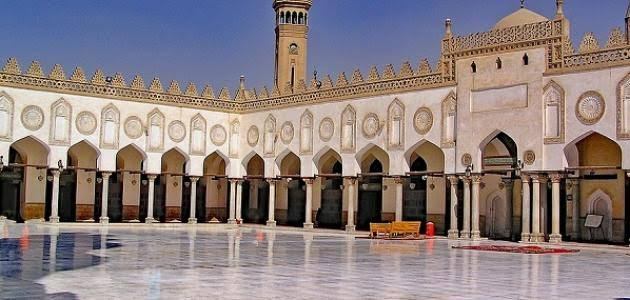
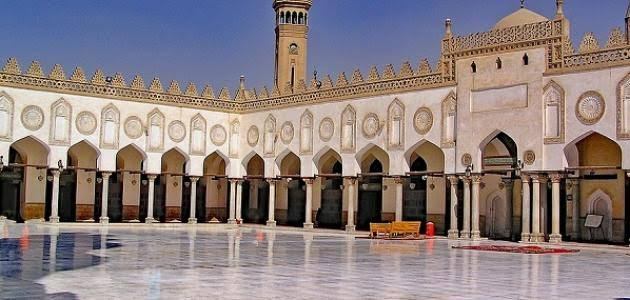

Luxor is often called the world’s greatest open-air museum, but that comes nowhere near describing this extraordinary place. Nothing in the world compares to the scale and grandeur of the monuments that have survived from ancient Thebes.
Luxor was the ancient city of Thebes, the great capital of (Upper) Egypt during the New Kingdom, and the glorious city of Amun, later to become the god Amun-Ra. The city was regarded in the Ancient Egyptian texts as (approximate pronunciation: "Waset"), which meant "city of the sceptre" (conventionally pronounced as "ta ipet" and meaning "the shrine") and then, in a later period, the Greeks called it Thebai and the Romans after them Thebae. Thebes was also known as "the city of the 100 gates", sometimes being called "southern Heliopolis" ('Iunu-shemaa' in Ancient Egyptian), to distinguish it from the city of Iunu or Heliopolis, the main place of worship for the god Ra in the north. It was also often referred to as niw.t, which simply means "city", and was one of only three cities in Egypt for which this noun was used (the other two were Memphis and Heliopolis).Montuhotep II who united Egypt after the troubles of the first intermediate period brought stability to the lands as the city grew in stature. The Pharaohs of the New Kingdom in their expeditions to Kush, in today's northern Sudan, and to the lands of Canaan, Phoenicia and Syria saw the city accumulate great wealth and rose to prominence, even on a world scale.
Of all Luxor's many monuments, the Temple Complex of Karnak has to be its most astonishing and beautiful feat. Within its precincts are the Great Temple of Amun, the Temple of Khons, and the Festival Temple of Tuthmosis III, as well as many other buildings
2. Temple of Deir al-Bahri (Queen Hatshepsut's Temple)
The Temple of Deir el-Bahri is magnificently situated at the foot of the sheer cliffs fringing the desert hills, the light-colored, almost white, sandstone of the temple standing out prominently against the golden yellow to light brown rocks behind. The temple complex is laid out on three terraces rising from the plain, linked by ramps, which divide it into a northern and a southern half. Along the west side of each terrace is a raised colonnade.
3. Medinet Habu
With the famous Valley of the Kings and Temple of Deir al-Bahri the main attractions, Medinet Habu often gets overlooked on a West Bank trip, but this is one of Egypt's most beautifully decorated temples and should be on everyone's West Bank hit list. The complex consists of a small, older temple built during the 18th dynasty and enlarged in the Late Period, and the great Temple of Ramses III, associated with a royal palace, which was surrounded by a battlemented enclosure wall four meters high.
4. Hot Air Balloon Ride over Luxor at Sunrise
Luxor can get so hot during the day, so it's a good idea to plan some activities for the early hours of morning or very late in the afternoon. Early risers are definitely rewarded here, as many of the sights open at 6am. For great aerial views over the entire west bank, with its temples and village farmland tucked between the escarpment, take a hot air balloon ride, the town's most popular activity, with balloons all taking off just after sunrise
Sohag
Welcome to Sohag
Sohag is one of the major Coptic Christian areas of Upper Egypt. Although there are few sights in the city, the nearby White and Red Monasteries are well worth a visit, and the town of Akhmim, across the river, is of interest.
It is one of the governorates of Upper Egypt which has a deep-rooted history and heritage which extends to the ancient ages, where Abydos, now located in Markaz Belina, was the capital of Egypt all through the eras of the first four Pharaonic Dynasties. Also, the ancient city of This (Thinis) or El-Tina, the village of mud or clay just north of Abydos, was home and headquarters of the first Pharaoh of Egypt, known in history as Mina Narmer who managed to unify Egypt.
During the Islamic era, the whole area of the governorate had been a part of Egypt under the Ottoman Empire until it became a separate province called Upper Egypt or Girga and its capital was Girga city. Later, with the rule of Muhammad Ali, Egypt was divided into directorates. However, Girga Directorate kept its name until 1960, when the capital was moved to Sohag and the name of the governorate changed accordingly.
Related Attractions in Sohag
1. Red Monastery
The Red Monastery, 4km southeast of the White Monastery and hidden at the rear of a village, is one of the most remarkable Christian buildings in Egypt. It was founded by Besa, a disciple of Shenoudaested tombs there such as; the royal tomb of Akhenaton, The tomb of "Hoya", the watcher of the harem, the tomb of Ahmos that was the Royal fan bearer, the tomb of MeriRa the high priest of God Aten and drawings of Akhenaton and the tomb of Maho the leader of the police in the period of Akhenaton and his tomb is one of the best-preserved tombs in Tel Al Amarna.
2. White Monastery
On rocky ground above the old Nile flood level, 6km northwest of Sohag, the White Monastery was founded by St Shenouda around AD 400 and dedicated to his mentor, St Bigol. White limestone from Pharaonic temples
3. Akhmim
The satellite town of Akhmim, on Sohag’s east bank, covers the ruins of the ancient Egyptian town of Ipu, itself built over an older predynastic settlement. It was dedicated to Min, a fertility god often represented by a giant phallus, equated with Pan by the Greeks (who later called the town Panopolis). A taxi to Akhmim should cost around LE50 per hour. The microbus, if you are allowed to take it, costs LE6 and takes 15 minutes.
4. Sohag National Museum

The recently renovated Sohag National Museum displays local antiquities, including those from ongoing excavations of the temple of Ramses II in Akhmim.
Qina
Welcome to Qina
Qena governorate in Upper Egypt, extending 3–4 miles (5–6 km) on each side of the Nile River between the Arabian and Libyan deserts. Occupying the great bend in the Nile valley, it extends along 110 miles (180 km) of the river.
Most of its land is under basin irrigation, yielding only one crop annually. Main crops are sugar (the governorate has more than one-third of the country’s productive land for sugarcane), lentils, and grains. Perennial irrigation water, mainly from the Kelabiya and A?f?n canals, is supplied from the Isn? Barrage
Related Attractions in Qina
1. Sidi Abdel-Rahim El-Qenawy Mosque
Sidi Abd Er-Rahim Mosque is one of famous mosque in Eygpt ,its a fantastic place and also the Islamic atmosphere when you are in the mosque you need to relaxing and enjoy our time with the god,
you can ask the god for every thing when you pray.
2. Al-Omari Mosque
is one of famous mosque in Eygpt ,its a fantastic place and also the Islamic atmosphere when you are in the mosque you need to relaxing and enjoy our time with the god,
you can ask the god for every thing when you pray.
3. Dandara Temple
Dandara Temple was built during the New Kingdom, specifically the 18th Dynasty. The current complex, including the Temple of Hathor, however, dates to the Ptolemaic and Roman periods, with (at least) one building dating to the Late Period. This is the mammisi (birth house) of Nectanebo II,
the last native ruler of ancient Egypt who ruled during the 4th century BC.
4. Isna Temple
temple of Esna dedicated to the god Khnum, his consorts Menhit and Nebtu, their son, Heka, and the goddess Neith,
was remarkable for the beauty of its site and the magnificence of its architecture. It was built of red sandstone, and its portico consisted of six rows of four columns each, with lotus-leaf capitals, all of which however differ from each other.[14] The temple contains very late hieroglyphic inscription,
dating from the reign of Decius (249–251 AD).
Assiut
Welcome to Assiut
the city of Asyut has almost 400,000 inhabitants. It is the Egyptian city with one of the highest Coptic Christian concentration of approximately 50%. It is also home to the Assiut University, one of the largest universities in Egypt, to the Assiut Barrage, and to the Lillian Trasher Orphanage
The name is derived from the Pharaonic word "Seut" which means "the guard". Asyut is located between two mountainous highlands and therefore its climate is extreme continental and it is the commercial capital of Upper Egypt. It is famous for its old neighborhoods and ruins, especially in the city of Assiut, Abutij and Sadafa. The ancient Egyptians built the city of Assiut on the Nile River and was named at the time "Seut" is derived from the word (Sa'ut) and means the guard in the ancient Egyptian language then the Arabs changed the name to Assiut and so retained Assiut in its name and retained its status as the capital through the ages was the rule of the Pharaohs rule As for the thirteenth province and was inhabited by the Deputy King and in the era of the Greeks divided Egypt to the Delta and Central Egypt and Upper Egypt Was Assiut capital of one of these sections was also the capital of the northern section in the era of the Romans and in the era of Muhammad Ali Egypt was divided into seven states,
one of which includes Gerga and Assiut.
During the 6th dynasty, the powerful nomarchs of the 12th nome of Upper Egypt were buried in rock-cut tombs near Deir El Gabrawi. Some of these nomarchs held the title Great Overloard of the Abydene Nome, and so controlled a large area extending from the 8th nome (Abydos) to the 13th nome of Upper Egypt. It is remarkable that some scenes in the tomb of one of these nomarchs, Ibi, occur again in the Theban tomb (TT36) of a man of the same name from the reign of Psammetichus I, about 1600 years later.
2. Al-Muharraq monastery
The area where the Monastery of Al-Muharraq is located now at Mount Qosqam, was barren desert and so every town surrounding it today was non-existent, except for an abandoned house and water well adjacent to it. The Holy Family, (the child Jesus and his mother St. Mary, St. Joseph the carpenter and Salome; their helper), rested in that modest house after it was repaired and restored by St. Joseph.
3. Hatnub quarries
Hatnub was the location of Egyptian alabaster quarries and an associated seasonally occupied workers' settlement in the Eastern Desert, about 65 km (40 mi) el-Minya, southeast of el-Amarna. The pottery, hieroglyph inscriptions and hieratic graffiti at the site show that it was in use intermittently from at least as early as the reign of Khufu until the Roman period (c. 2589 BC–AD 300). The Hatnub quarry settlement, associated with three principal quarries.
4. El badari region
The finds from El Badari form the original basis for the Badarian culture (c. 5500-4000 BC), the earliest phase of the Upper Egyptian Predynastic period. The area stretches for 30 km along the east bank of the Nile, and was first excavated by Guy Brunton and Gertrude Caton-Thompson between 1922 and 1931. Most of the cemeteries in the Badarian region have yielded distinctive pottery vessels (particularly red-polished ware with blackened tops), as well as terracotta and ivory anthropomorphic figures, slate palettes, stone vases and flint tools.
Aswan
Welcome to Aswan
Aswan is a busy market and tourist centre located just north of the Aswan Dam on the east bank of the Nile at the first cataract. The modern city has expanded and includes the formerly separate community on the island of Elephantine.
The weather of Aswan is extremely clear, bright and sunny year-round, in all seasons, with a low seasonal variation, with almost 4,000 hours of annual sunshine, very close to the maximum theoretical sunshine duration. Aswan is one of the sunniest places on Earth.
Related Attractions in Aswan
1. Philae Temple
Philae is the most picturesque of all Egypt’s temples,
it sits on a Nile island reached by small motor launch.
the island’s temples were submerged for a part of each year.
With the building of the High Dam (1969–71)
, the temples were relocated to nearby Agilika Island,
which was landscaped to match the original site.
2. Abu Simbel Temples
This site south of Aswan along Lake Nasser’s shore is the most famous in all of Egypt after the Giza Pyramids. Built by the greatest of the pharaohs, Ramesses II, these huge rock-cut temples marked the southern boundary of the Egyptian Empire with Nubia at the peak of its power during the New Kingdom. They were meant to convey the power of Egypt’s rulers to anyone who laid eyes upon them.
3. High Dam
The Aswan High Dam yields enormous benefits to the economy of Egypt. For the first time in history, the annual Nile flood can be controlled by man. The dam impounds the floodwaters, releasing them when needed to maximize their utility on irrigated land, to water hundreds of thousands of new acres, to improve navigation both above and below Asw?n, and to generate enormous amounts of electric power (the dam’s 12 turbines can generate 10 billion kilowatt-hours annually). The reservoir, which has a depth of 300 feet (90 metres) and averages 14 miles (22 km) in width, supports a fishing industry.
4. Kom Ombo Temple
The Location of the Temple of Kom Ombo
The small town of Kom Ombo is situated on the East side of the Nile, 45 kilometers to the north of the city of Aswan and about 800 kilometers to the south of Cairo, the capital of Egypt.
Surrounded by fields of sugarcane and corn, Kom Ombo is a pleasant agriculture town that now hosts many Nubians were displaced when the Nile flooded their hometowns after the construction of the Nasser Lake.
Minya
Welcome to Minya
Al Minya is small city in Middle Egypt that does not receive much attention on the tourist map, but it was once a powerful regional capital within Egypt. During the First Intermediate Period, when the authority that ruled Egypt from Memphis during the Old kingdom broke down.
Minya became a minor power center and it continued to hold sway over the center of Egypt through the Middle Kingdom.
Visiting Al Minya is not a common stop on most tours. The sites are visited much less frequently and the atmosphere of the town is not geared toward foreign visitors. While the town doesn’t offer much to visitors, there are some interested colonial era buildings in the old section of town near the central midan, Tahrir Square.
The tombs of Beni Hassan, cut into the rocky cliffs on the east side of the Nile, date from the period of Al Minya’s influence. There are 39 tombs in all, but only the four most impressive are open to the public.
Related Attractions in Minya
1. Tell El Amarna and Beni Hassan
Start your day tour to AlMinya with Tall El Amarna which was the capital of Akhenaton during the new kingdom. It was called "akht Aten". Your guide will help you to enjoy and explore the most interested tombs there such as; the royal tomb of Akhenaton, The tomb of "Hoya", the watcher of the harem, the tomb of Ahmos that was the Royal fan bearer, the tomb of MeriRa the high priest of God Aten and drawings of Akhenaton and the tomb of Maho the leader of the police in the period of Akhenaton and his tomb is one of the best-preserved tombs in Tel Al Amarna.
2. Tomb of Kheti
The no march Kheti bore the title *Great Leader of the Gazelle Nome in its Entirety* the hall-like room (c. 39 ×16 m) with its gently vaulted ceiling is divided at the rear of the cult chamber by two rows of columns.
3. Tomb of Baket
Baket, another no march , had a tomb very similar to that of his son Kheti. In the case of the father however the large room (14 x 54 ft. 12.5 x 16.5 m) was divided by only two lotus stem columns.
4. Tomb of Amenemhet
The tombs of Amenemhet is without doubt one of the finest in Beni Hassan. The cult chamber is organized by four rows of 16- sided Its main axis is oriented towards a large statue niche in the eastern wall containing a seated image of Ameni ( an abbreviated name of the tomb owner ) with figures of his wife and mother. The central vault of the ceiling features a mat pattern while the entrance (doorway) is decorated with a long biographical inscription recounting this no march's various military activities. It dates from the 43rd year of the regain of Semester.
ALGiza
Welcome to ALGiza
capital of Al-Jizah (governorate) in Upper Egypt, located on the west bank of the Nile River just south-southwest of Cairo. It is a suburb of the national capital, with a distinctive character enriched by several archaeological and cultural sites.
Southwest of the city are the three great pyramids of the pharaohs: Khufu (Cheops), Khafre (Chephren), and Menkaure (Mykerinos), all 4th dynasty (c. 2575–c. 2465 bce). Al-J?zah was linked to Cairo by a bridge of boats and then by successive permanent bridges.
Related Attractions in ALGiza
1. pyramids
The Giza Pyramids, built to endure an eternity,
have done just that.
The monumental tombs are relics of Egypt's Old Kingdom era and were constructed some 4,500 years ago.
2. sphinx
Great Sphinx of Giza, colossal limestone statue of a recumbent sphinx located in Giza, Egypt, that likely dates from the reign of King Khafre (c. 2575–c. 2465 bce) and depicts his face.
It is one of Egypt’s most famous landmarks and is arguably the best-known example of sphinx art.
3. Saqqara pyramid
Saqqara is one of several other notable necropolis sites near Cairo that offer impressive sights and hold great archaeological significance. In fact, Saqqara may hold more interest to archaeologists than Giza.
The huge site hosts burials dating from before the beginning of the Old Kingdom up through the Greek Period of Egyptian history.
4. Zoo
Photo Credit: Egyptian Streets
A visit to the Giza Zoo is one of the most common activities among Egyptian families to enjoy a day out in a public area.
With great enthusiasm, families, children, and school trips rush to Giza Zoo to enjoy a day with animals.
Alexandria
Welcome to Alexandria
Alexandria is the second-largest city in Egypt and a major economic center. With a population of 5,200,000, Alexandria is the largest city on the Mediterranean, the sixth-largest city in the Arab world and the ninth-largest in Africa. The city extends about 40 km (25 mi) at the northern coast of Egypt along the Mediterranean Sea. Alexandria is a popular tourist destination, and also an important industrial center because of its natural gas and oil pipelines from Suez.
Founded in 331 BC by 25-year-old Alexander the Great, Alexandria (Al Iskendariyya) is the stuff of legend. Its towering Pharos lighthouse, marking the ancient harbour's entrance, was one of the Seven Wonders of the World, and its Great Library was considered the archive of ancient knowledge. Alas, fate dealt the city a spate of cruel blows. The Pharos collapsed and the Great Library was torched. Part of the ancient city disappeared under the sea and part under the modern city, so there are few visible remains of the glorious past.
Related Attractions in Alexandria
1. Bibliotheca Alexandrina
Alexandria’s ancient library was one of the greatest of all classical institutions, and while replacing it might seem a Herculean task, the new Bibliotheca Alexandrina manages this with aplomb. Opened in 2002, this impressive piece of modern architecture is a deliberate attempt to rekindle the brilliance of the original centre of learning and culture. The complex has become one of Egypt’s major cultural venues and a stage for numerous international performers, and is home to a collection of brilliant museums.
2. Alexandria National Museum
This excellent museum sets a high benchmark with its summary of Alexandria’s past. Housed in a beautifully restored Italianate villa, the small but thoughtfully selected and well-labelled collection does a sterling job of relating the city’s history from antiquity until the modern period. Look out especially for the beautiful tanagra – terracotta statues of Greek women – and the discoveries found underwater in the Mediterranean.
3. Mahmoud Said Museum
Mahmoud Said (1897–1964) was one of Egypt’s finest 20th-century artists, even though he is little known outside his country. A judge by profession, he moonlighted as a painter and became a key member of a group of sophisticates devoted to forging an Egyptian artistic identity in the 1920s and '30s. This museum presents about 40 of his works in the beautiful Italianate villa in which he once lived. You will need to show a passport to get in.
4. Fort Qaitbey
The Eastern Harbour is dominated by the bulky walls of Fort Qaitbey, built on a narrow peninsula over the remains of the legendary Pharos lighthouse by the Mamluk sultan Qaitbey in 1480. Finely restored, it has a warren of rooms to explore, and the walk here is just as rewarding. From Midan Ramla it's a 30- to 45-minute stroll along the Corniche with spectacular harbour views along the way.
ALFayom
Welcome to ALFayom
Less than two hours from Cairo, the vast salty Lake Qarun comes into view and the arid monotonous plains are replaced with a lush patchwork of farming plots, sunflowers swaying in the breeze, and tall date palms with water buffalo lounging in the shade beside them.
This large fertile basin, about 70km wide and 60km long, is often referred to as an oasis, though technically it’s watered not by springs but by the Nile via hundreds of capillary canals, many dug in ancient times. The area harbours a number of small but important archaeological sites; slumped, stubby remains of pyramids and crumbled remnants of once vast Ptolemaic cities that were major centres of crocodile worship. Fayoum is also the base for adventures out to Wadi Rayyan's desert lakes and to Wadi Al Hittan, where prehistoric whale skeletons sit amid a sweep of rock-outcrop dotted sand.
Related Attractions in Al Fayom
1. Hawara Pyramid
The Pyramid of Hawara was built out of brick stones and then coated by limestone. It is sometimes called the Black Pyramid. When it was still standing, the Pyramid of Hawara was a large structure that was 58 meters high and each side of the base of the pyramid was around 100 meters long
2. Tunis village
The small village of Tunis is located in the oasis of Fayoum , on the way to Wadi Rayan. Located on a hill facing a large salt water lake, the village overlooks a stunning view of the edge of the desert on the other side of the lake. It is one of the most beautiful places in Egypt.
3. Wadi Al-Hitan (Whale Valley)
Wadi Al-Hitan, Whale Valley, in the Western Desert of Egypt, contains invaluable fossil remains of the earliest, and now extinct, suborder of whales, Archaeoceti. These fossils represent one of the major stories of evolution: the emergence of the whale as an ocean-going mammal from a previous life as a land-based animal. This is the most important site in the world for the demonstration of this stage of evolution. It portrays vividly the form and life of these whales during their transition. The number, concentration and quality of such fossils here is unique, as is their accessibility and setting in an attractive and protected landscape.
4. Qasr Qaroun Temple
Qasr Qarun, an Arabic word means the Palace of Qarun.
This is a well preserved Ptolemaic temple, about 65 kilometers from fayoum city, in the north western corner of the province.
Marsa Matrouh
Welcome to Marsa Matrouh
Nestled inside a big circular bay and protected from the high seas by a series of rocks forming a natural breakwater, Marsa Matrouh is a relatively secluded destination on Egypt's Mediterranean shore. It is the capital of the Matrouh Governorate, which extends from the 61st km of the Alexandria-Matrouh highway to the Egypt-Libya border
With long sandy white beaches and crystal clear waters, such as Agiba Beach and Gharam Beach, described by many as one of the most beautiful seashore landscapes in the world, many believe that Cleopatra herself bathed in the tranquil waters of Marsa Matrouh.
The Rommel Cave is one of the natural caves in Marsa Matruh. German leader, Erwin Rommel, used it as his headquarters while conducting the North African wars during World War II. In 1997, the idea came up of turning the cave into a museum and tourist destination.
2. Uma alrakham
Uma Alrakham is also known for its numerous breathtaking beaches with white soft sands and calm, crystal clear waters. The large bay is protected from the high seas by a series of rocks forming a natural breakwater. The water’s colour ranges from blue to green, due to the depths of the bay. The irregular sea ground forms an amazing underwater world of mountains, valleys and colourful fish species.
3. Coptic Chapel
The Coptic Chapel was built in the early Coptic age. It contains several caves bearing inscriptions.
4.Egyptian Fleet Anchorage
At the Egyptian Fleet Anchorage, west of the port of Marsa Matruh, you’ll find the remains of Ptolemy’s naval installations.
Port Said
Welcome to Port Said
In its late-19th-century raffish heyday, Port Said was Egypt’s city of vice and sin. The boozing seafarers and packed brothels may have long since been scrubbed away, but this louche period is evoked still in the waterfront’s muddle of once-grand architecture slowly going to seed.
attraction, and the reason for the town’s establishment, is the Suez Canal. The raised pedestrian-only boardwalk running along the waterfront provides up-close views over the canal’s northern entry point, allowing travellers to admire the passing supertanker traffic up close. The free ferry that crosses the canal to the languid suburb of Port Fuad is the only opportunity for casual visitors to ride the waters of this marvel of construction.
Related Attractions in Port Said
1. Port Said Lighthouse
Going all the way back to the construction of the Pharos of Alexandria in the 3rd century B.C.E., Egypt has long been a nation of naval innovation. The Port Said Lighthouse was the first building in the world created with reinforced concrete. Erected in 1869 by François Coignet
2. The Cornishe
Running along the waterfront is a raised pedestrian-only 8km boardwalk that’s best for close up views of the canal’s entry point. The boardwalk is now filled with little shops selling everything from clothes to electronics, but will soon turn into an open-air center.
3. Port Fouad
Port Fouad is one of Egypt’s meeting points between Africa and Asia located in the North-West corner of Sinai on the Mediterranean. It was named after King Fouad I, and because it is a port it became Port Fouad.
4.Tennis
Tennis was an important port, exporting agricultural products of Egypt, particularly textiles, of which itself is famed for producing[3] throughout the Middle East, due to its geographical location served by the main eastern tributary of the Nile in medieval times, according to Muhammad al-Idrisi
AlSuez
Welcome to AlSuez
is a seaport city (population of about 750,000 as of August 2018) in north-eastern Egypt, located on the north coast of the Gulf of Suez (a branch of the Red Sea),
near the southern terminus of the Suez Canal, having the same boundaries as Suez Governorate. It has three harbours, Adabiya, Ain Sokhna and Port Tawfiq, and extensive port facilities. Together they form a metropolitan area
Related Attractions in AlSuez
1. Suez Canal
The Suez Canal is a man-made waterway connecting the Mediterranean Sea to the Indian Ocean via the Red Sea. It enables a more direct route for shipping between Europe and Asia, effectively allowing for passage from the North Atlantic to the Indian Ocean without having to circumnavigate the African continent. The waterway is vital for international trade and, as a result, has been at the center of conflict since it opened in 1869.
2. Uyun Musaa
Oyun Musa is one of Egypt’s hot springs; renowned for the therapeutic effects of its water, the destination has made Sinai popular for therapeutic tourism.
Oyun Musa boasts the world’s highest sulfur rates, and with temperatures reaching up to 27 degrees Celsius, the water helps treat many diseases such as those of the kidneys and skin.
3. St. Anthony Monastery
The Church of St Anthony is the oldest part of the monastery and the main highlight of a visit here. It's built over the saint’s tomb and contains one of Egypt’s most significant collections of Coptic wall paintings
4.Suez Museum
the museum is part of a plan by the Ministry of State for Antiquities (MSA) to establish national museums in cities throughout Egypt. The Suez museum displays archaeological artefacts, illustrations and maps that reveal the history of the Suez Canal beginning with the time of the canal’s ancient forerunner, the Sesostris Canal.
Cairo
Welcome to Cairo
Cairo’s an ancient city that also happens to be a modern metropolis—it’s one of the biggest cities in the Middle East and has the traffic and noise issues to prove it. But as long as you’re not looking for solitude,
Cairo—the City of the Thousand Minarets—is a splendid place to explore Egyptian history and culture.
Cairo is steeped in the ancient past, making for a wide array of cultural attractions to take in on a present-day visit. Many people travel to the Egyptian capital to witness its historical marvels, and to experience some of its modern vibrancy too. If you’re planning a trip to this multifaceted city,
check out these top things to see and do in Cairo.
The Pharaonic Village is a historic experience not to be missed.
It is a unique place where Egypt's entire history is explained in 2-3 hours,
from ancient living to modern times. The Pharaonic Village is a great introduction to Egypt, a perfect stop for anyone's first trip to Egypt.. It is located on an island in the Nile,
just 3 miles south of the center of Cairo. In this village, you are transported by floating amphitheaters, while a hundred actors and actresses demonstrate scenes from ancient Egypt (papyrus making, sculpting, home building….etc.). It is truly a one-of-a-kind experience you cannot find anywhere else. This trip is definitely one your kids will always remember!
2. Khan Al-Khalily
The skinny lanes of Khan Al Khalili are basically a medieval-style mall. This agglomeration of shops – many arranged around small courtyards – stocks everything from soap powder to semiprecious stones, not to mention tacky toy camels and alabaster pyramids. Most shops and stalls open from around 9am to well after sundown (except Friday morning and Sunday), although plenty of the souvenir vendors are open as long as there are customers,
even on Sunday.
3. Cairo Tower
Locals and tourists alike come to the Cairo Tower to take in the breathtaking views across the city of a thousand minarets. The free-standing tower is located on Gezira Island (Zemalak) not far from the Museum of Modern Art. The body of the tower is made of granite and has intricate latticework which slightly fans out at the top of the tower like a lotus flower. The tower was designed by Naoum Shebib and constructed from 1954 to 1961
4. ALMoez Street
It is one of the most amazing streets in Islamic Cairo it dates back to the Fatimid. to discover the Islamic civilization.
Walking along El-Moez Street, you will be fascinated by the historic atmosphere of the old cafés, souvenir shops, and food and sweets sold from kiosks and carts. You will also find Islamic art carved into the historic mosques and houses.
Sharm ElSheikh
Welcome to Sharm ElSheikh
Sharm ElSheikh is an Egyptian city on the southern tip of the Sinai Peninsula, in South Sinai Governorate, on the coastal strip along the Red Sea. Its population is approximately 73,000 as of 2015. Sharm El Sheikh is the administrative hub of Egypt's South Sinai Governorate, which includes the smaller coastal towns of Dahab and Nuweiba as well as the mountainous interior, St. Catherine and Mount Sinai. The city and holiday resort is a significant centre for tourism in Egypt, while also attracting many international conferences and diplomatic meetings.
Sharm El Sheikh was little more than an occasional base of operations for local fishermen; the nearest permanent settlement was in Nabk, north of Ras El Nasrani ("The Tiran Straits"). Commercial development of the area began when the Israelis built the town of Ofira, overlooking Sharm El Maya Bay and the Nesima area, and opened the first tourist-oriented establishments in the area 6 km north at Naama Bay. These included a marina hotel on the southern side of the bay, a nature field school on the northern side, diving clubs, a now well-known promenade, and the Naama Bay Hotel. The site off the shore gun emplacements at Ras Nasrani opposite Tiran Island is now a diving area.
Ras Muhammad is the most famous national park in Egypt and one of the most famous diving sites in the world. A national park that is located between the rich coral reefs of the Red Sea and the inland desert of the Sinai- it covers the coral headland at the southernmost tip of Sinai. At the southern end of the headland there is a small stand of Mangrove . Beneath the crystal-clear waters of the Red Sea you'll find coral reefs teeming with life including a diversity of vertebrate and invertebrate species.
2. St. Catherine and Mount sinai
The town of St.Katherine is in the Sinai peninsula in Egypt at an elevation of about 1600 meters from sea level, at the foot of the Sinai High Mountains.Up to a thousand visitors come to visit St. Katherine’s Monastery, the oldest continuously inhabited monastery in the World built on the site where Moses talked to God in the miracle of the Burning Bush, and to climb Mt. Sinai (the Biblical Mt. Horeb, known locally as Jebel Musa) where Moses has received the Ten Commandments.Most visitors arrive on organized coach tours from the Red Sea resorts of Sharm elSheikh
3. ADVENTURE IN ABU GALUM
The Abu Galum Protectorate is a narrow coastal plain with high coastal mountains and the area plays a significant role in regulating the use of land. The many channels are a home to more than 165 plants species which even includes the medicinal plant, Batheran, which is used to treat abdominal colic. The wildlife in the area includes the Hyrax, the Rupell's Fox and the Striped Hyena. Also, ten species of snakes and lizards can be seen when at this protectorate. It’s advised to visitors to avoid the sandy areas which have vegetation.
4. DAHAB
Dahab can be divided into three major parts. Masbat, which includes the Bedouin village Asalah, is in the north. South of Masbat is Mashraba, which is more touristic and has considerably more hotels. In the southwest is Medina which includes the Laguna area, famous for its excellent shallow-water windsurfing.
The region of Asalah is quite developed and has many camps and hostels. Most people who have visited Dahab in the past were backpackers interested in diving and snorkeling in the Red Sea. The city of Dahab counts around 15,000 inhabitants.
Portfolio
Who We Are ?
We are an internal tourism company established in 2019, we make tourist programs in the different governorates of Egypt for Egyptians and tourists, and we provide tourist programs in all governorates and we have a distinguished service of transfers and stays in the best hotels.


 Of all Luxor's many monuments, the Temple Complex of Karnak has to be its most astonishing and beautiful feat. Within its precincts are the Great Temple of Amun, the Temple of Khons, and the Festival Temple of Tuthmosis III, as well as many other buildings
Of all Luxor's many monuments, the Temple Complex of Karnak has to be its most astonishing and beautiful feat. Within its precincts are the Great Temple of Amun, the Temple of Khons, and the Festival Temple of Tuthmosis III, as well as many other buildings With the famous Valley of the Kings and Temple of Deir al-Bahri the main attractions, Medinet Habu often gets overlooked on a West Bank trip, but this is one of Egypt's most beautifully decorated temples and should be on everyone's West Bank hit list. The complex consists of a small, older temple built during the 18th dynasty and enlarged in the Late Period, and the great Temple of Ramses III, associated with a royal palace, which was surrounded by a battlemented enclosure wall four meters high.
With the famous Valley of the Kings and Temple of Deir al-Bahri the main attractions, Medinet Habu often gets overlooked on a West Bank trip, but this is one of Egypt's most beautifully decorated temples and should be on everyone's West Bank hit list. The complex consists of a small, older temple built during the 18th dynasty and enlarged in the Late Period, and the great Temple of Ramses III, associated with a royal palace, which was surrounded by a battlemented enclosure wall four meters high.

 Hatnub was the location of Egyptian alabaster quarries and an associated seasonally occupied workers' settlement in the Eastern Desert, about 65 km (40 mi) el-Minya, southeast of el-Amarna. The pottery, hieroglyph inscriptions and hieratic graffiti at the site show that it was in use intermittently from at least as early as the reign of Khufu until the Roman period (c. 2589 BC–AD 300). The Hatnub quarry settlement, associated with three principal quarries.
Hatnub was the location of Egyptian alabaster quarries and an associated seasonally occupied workers' settlement in the Eastern Desert, about 65 km (40 mi) el-Minya, southeast of el-Amarna. The pottery, hieroglyph inscriptions and hieratic graffiti at the site show that it was in use intermittently from at least as early as the reign of Khufu until the Roman period (c. 2589 BC–AD 300). The Hatnub quarry settlement, associated with three principal quarries.


 This excellent museum sets a high benchmark with its summary of Alexandria’s past. Housed in a beautifully restored Italianate villa, the small but thoughtfully selected and well-labelled collection does a sterling job of relating the city’s history from antiquity until the modern period. Look out especially for the beautiful tanagra – terracotta statues of Greek women – and the discoveries found underwater in the Mediterranean.
This excellent museum sets a high benchmark with its summary of Alexandria’s past. Housed in a beautifully restored Italianate villa, the small but thoughtfully selected and well-labelled collection does a sterling job of relating the city’s history from antiquity until the modern period. Look out especially for the beautiful tanagra – terracotta statues of Greek women – and the discoveries found underwater in the Mediterranean.
 Mahmoud Said (1897–1964) was one of Egypt’s finest 20th-century artists, even though he is little known outside his country. A judge by profession, he moonlighted as a painter and became a key member of a group of sophisticates devoted to forging an Egyptian artistic identity in the 1920s and '30s. This museum presents about 40 of his works in the beautiful Italianate villa in which he once lived. You will need to show a passport to get in.
Mahmoud Said (1897–1964) was one of Egypt’s finest 20th-century artists, even though he is little known outside his country. A judge by profession, he moonlighted as a painter and became a key member of a group of sophisticates devoted to forging an Egyptian artistic identity in the 1920s and '30s. This museum presents about 40 of his works in the beautiful Italianate villa in which he once lived. You will need to show a passport to get in.


 The Pyramid of Hawara was built out of brick stones and then coated by limestone. It is sometimes called the Black Pyramid. When it was still standing, the Pyramid of Hawara was a large structure that was 58 meters high and each side of the base of the pyramid was around 100 meters long
The Pyramid of Hawara was built out of brick stones and then coated by limestone. It is sometimes called the Black Pyramid. When it was still standing, the Pyramid of Hawara was a large structure that was 58 meters high and each side of the base of the pyramid was around 100 meters long
 The small village of Tunis is located in the oasis of Fayoum , on the way to Wadi Rayan. Located on a hill facing a large salt water lake, the village overlooks a stunning view of the edge of the desert on the other side of the lake. It is one of the most beautiful places in Egypt.
The small village of Tunis is located in the oasis of Fayoum , on the way to Wadi Rayan. Located on a hill facing a large salt water lake, the village overlooks a stunning view of the edge of the desert on the other side of the lake. It is one of the most beautiful places in Egypt.
 Wadi Al-Hitan, Whale Valley, in the Western Desert of Egypt, contains invaluable fossil remains of the earliest, and now extinct, suborder of whales, Archaeoceti. These fossils represent one of the major stories of evolution: the emergence of the whale as an ocean-going mammal from a previous life as a land-based animal. This is the most important site in the world for the demonstration of this stage of evolution. It portrays vividly the form and life of these whales during their transition. The number, concentration and quality of such fossils here is unique, as is their accessibility and setting in an attractive and protected landscape.
Wadi Al-Hitan, Whale Valley, in the Western Desert of Egypt, contains invaluable fossil remains of the earliest, and now extinct, suborder of whales, Archaeoceti. These fossils represent one of the major stories of evolution: the emergence of the whale as an ocean-going mammal from a previous life as a land-based animal. This is the most important site in the world for the demonstration of this stage of evolution. It portrays vividly the form and life of these whales during their transition. The number, concentration and quality of such fossils here is unique, as is their accessibility and setting in an attractive and protected landscape.
 Qasr Qarun, an Arabic word means the Palace of Qarun.
This is a well preserved Ptolemaic temple, about 65 kilometers from fayoum city, in the north western corner of the province.
Qasr Qarun, an Arabic word means the Palace of Qarun.
This is a well preserved Ptolemaic temple, about 65 kilometers from fayoum city, in the north western corner of the province.


 Going all the way back to the construction of the Pharos of Alexandria in the 3rd century B.C.E., Egypt has long been a nation of naval innovation. The Port Said Lighthouse was the first building in the world created with reinforced concrete. Erected in 1869 by François Coignet
Going all the way back to the construction of the Pharos of Alexandria in the 3rd century B.C.E., Egypt has long been a nation of naval innovation. The Port Said Lighthouse was the first building in the world created with reinforced concrete. Erected in 1869 by François Coignet
 Running along the waterfront is a raised pedestrian-only 8km boardwalk that’s best for close up views of the canal’s entry point. The boardwalk is now filled with little shops selling everything from clothes to electronics, but will soon turn into an open-air center.
Running along the waterfront is a raised pedestrian-only 8km boardwalk that’s best for close up views of the canal’s entry point. The boardwalk is now filled with little shops selling everything from clothes to electronics, but will soon turn into an open-air center.
 Port Fouad is one of Egypt’s meeting points between Africa and Asia located in the North-West corner of Sinai on the Mediterranean. It was named after King Fouad I, and because it is a port it became Port Fouad.
Port Fouad is one of Egypt’s meeting points between Africa and Asia located in the North-West corner of Sinai on the Mediterranean. It was named after King Fouad I, and because it is a port it became Port Fouad.
 Tennis was an important port, exporting agricultural products of Egypt, particularly textiles, of which itself is famed for producing[3] throughout the Middle East, due to its geographical location served by the main eastern tributary of the Nile in medieval times, according to Muhammad al-Idrisi
Tennis was an important port, exporting agricultural products of Egypt, particularly textiles, of which itself is famed for producing[3] throughout the Middle East, due to its geographical location served by the main eastern tributary of the Nile in medieval times, according to Muhammad al-Idrisi
 The Suez Canal is a man-made waterway connecting the Mediterranean Sea to the Indian Ocean via the Red Sea. It enables a more direct route for shipping between Europe and Asia, effectively allowing for passage from the North Atlantic to the Indian Ocean without having to circumnavigate the African continent. The waterway is vital for international trade and, as a result, has been at the center of conflict since it opened in 1869.
The Suez Canal is a man-made waterway connecting the Mediterranean Sea to the Indian Ocean via the Red Sea. It enables a more direct route for shipping between Europe and Asia, effectively allowing for passage from the North Atlantic to the Indian Ocean without having to circumnavigate the African continent. The waterway is vital for international trade and, as a result, has been at the center of conflict since it opened in 1869.
 

 The Pharaonic Village is a historic experience not to be missed.
It is a unique place where Egypt's entire history is explained in 2-3 hours,
from ancient living to modern times. The Pharaonic Village is a great introduction to Egypt, a perfect stop for anyone's first trip to Egypt.. It is located on an island in the Nile,
just 3 miles south of the center of Cairo. In this village, you are transported by floating amphitheaters, while a hundred actors and actresses demonstrate scenes from ancient Egypt (papyrus making, sculpting, home building….etc.). It is truly a one-of-a-kind experience you cannot find anywhere else. This trip is definitely one your kids will always remember!
The Pharaonic Village is a historic experience not to be missed.
It is a unique place where Egypt's entire history is explained in 2-3 hours,
from ancient living to modern times. The Pharaonic Village is a great introduction to Egypt, a perfect stop for anyone's first trip to Egypt.. It is located on an island in the Nile,
just 3 miles south of the center of Cairo. In this village, you are transported by floating amphitheaters, while a hundred actors and actresses demonstrate scenes from ancient Egypt (papyrus making, sculpting, home building….etc.). It is truly a one-of-a-kind experience you cannot find anywhere else. This trip is definitely one your kids will always remember!
 The skinny lanes of Khan Al Khalili are basically a medieval-style mall. This agglomeration of shops – many arranged around small courtyards – stocks everything from soap powder to semiprecious stones, not to mention tacky toy camels and alabaster pyramids. Most shops and stalls open from around 9am to well after sundown (except Friday morning and Sunday), although plenty of the souvenir vendors are open as long as there are customers,
even on Sunday.
The skinny lanes of Khan Al Khalili are basically a medieval-style mall. This agglomeration of shops – many arranged around small courtyards – stocks everything from soap powder to semiprecious stones, not to mention tacky toy camels and alabaster pyramids. Most shops and stalls open from around 9am to well after sundown (except Friday morning and Sunday), although plenty of the souvenir vendors are open as long as there are customers,
even on Sunday. Locals and tourists alike come to the Cairo Tower to take in the breathtaking views across the city of a thousand minarets. The free-standing tower is located on Gezira Island (Zemalak) not far from the Museum of Modern Art. The body of the tower is made of granite and has intricate latticework which slightly fans out at the top of the tower like a lotus flower. The tower was designed by Naoum Shebib and constructed from 1954 to 1961
Locals and tourists alike come to the Cairo Tower to take in the breathtaking views across the city of a thousand minarets. The free-standing tower is located on Gezira Island (Zemalak) not far from the Museum of Modern Art. The body of the tower is made of granite and has intricate latticework which slightly fans out at the top of the tower like a lotus flower. The tower was designed by Naoum Shebib and constructed from 1954 to 1961 It is one of the most amazing streets in Islamic Cairo it dates back to the Fatimid. to discover the Islamic civilization.
Walking along El-Moez Street, you will be fascinated by the historic atmosphere of the old cafés, souvenir shops, and food and sweets sold from kiosks and carts. You will also find Islamic art carved into the historic mosques and houses.
It is one of the most amazing streets in Islamic Cairo it dates back to the Fatimid. to discover the Islamic civilization.
Walking along El-Moez Street, you will be fascinated by the historic atmosphere of the old cafés, souvenir shops, and food and sweets sold from kiosks and carts. You will also find Islamic art carved into the historic mosques and houses.

%20-%20Copy.jpg)